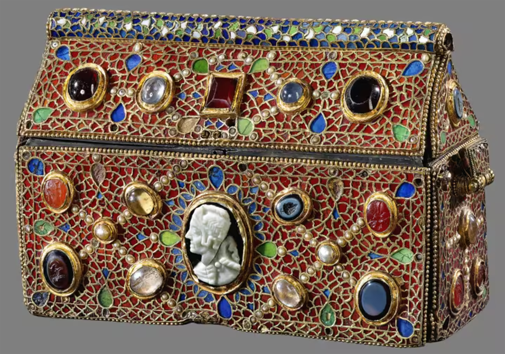

Coffret-reliquaire du prêtre Teudéric
Auteur: inconnu
Date: VII
e
siècle
Matériaux: émail champlevé, perles, pierres semi-précieuses
Lieu de conservation: Abbaye de Saint-Maurice d'Agaune
© Jean-Yves Glassey et Michel Martinez
